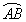
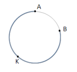
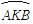
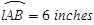
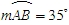
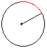
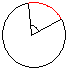
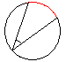

An arc is a portion of the circumference of a circle. In the figure above, the arc is the blue part of the circle. Strictly speaking, an arc could be a portion of some other curved shape, such as an ellipse, but it almost always refers to a circle. To avoid all possible mistake, it is sometimes called a circular arc.
A straight line is drawn between the end points of the arc would be a chord of the circle.
If the arc length is exactly half the circle, this called a semicircular arc. See Semicircle definition.
Arcs are named by their endpoints. The blue arc above would be called "arc AB". or "arc BA", the
order of the endpoints does not matter. As a shorthand this can be written as the letters AB with a curving line above them
Example:

which is read "arc AB".

Notice that this naming can be ambiguous. For example it may mean the major arc AB, where you go the long way around the bottom of the circle. Unless stated otherwise, it always means the minor arc - the shortest of the two.If you want to indicate the major arc, add an extra point and use three letters in the name. For example in the diagram above, the major arc is indicated by

which is the long arc from A to B going around the bottom via K.There are two measures of an arc
The length of an arc is the distance along the curved line forming the arc. It would be measured in distance units, such as meters. To indicate this measure, the arc is preceded by the lower case letter L (for 'length'). For eaxmaple

would be read as "the length of the arc AB is 6 inches". See Arc Length page for more.
is read as "the arc AB has a measure of 35 degrees". See Arc Angle Measure for more.| Arc Length | The length of the curved arc line. See Arc Length page for more. | |
| Radius |
 |
The radius
of the circle of which the arc is a part. See Radius of an Arc for ways to calculate the arc radius when you know other properties of the arc. |
| Central Angle |
 |
The angle subtended by the arc to the center of the circle of which it is a part. This angle is always twice the peripheral angle (see below). See Central Angle definition for more. |
| Inscribed Angle |
 |
The angle subtended by the arc to any point on the circumference of the circle of which it is a part. This angle is always half the central angle (see above). See Inscribed Angle of an Arc for more. |